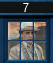
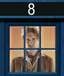
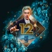
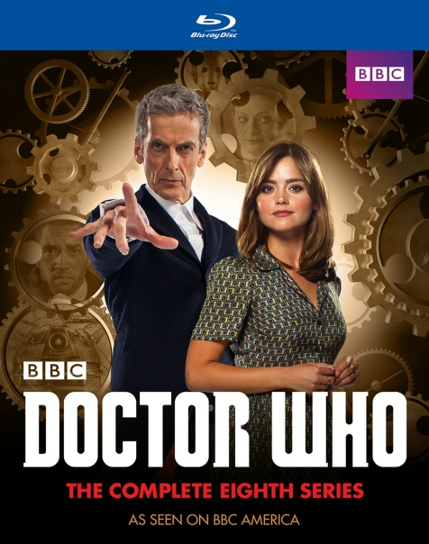
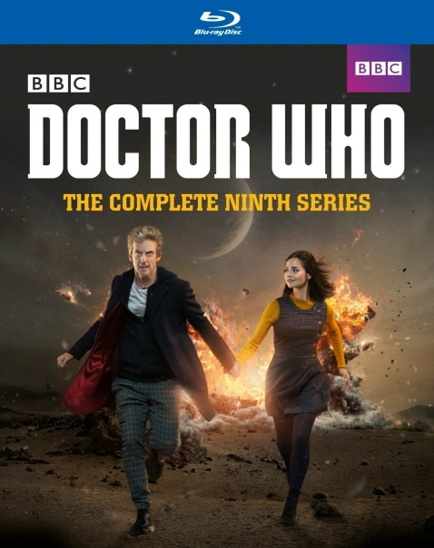
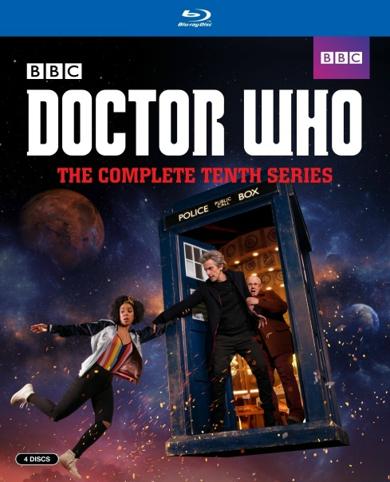

Таблица коллекции |  Навигация по канону |  Связные экранизации |
Таблица коллекции | Навигация по канону | Связные экранизации |







Эра Двенадцатого Доктора
Актёр: Питер Капальди

Дебют Двенадцатого Доктора — Питер Капальди приносит резкую, невозмутимую интонацию: его Доктор прямолинеен, саркастичен и не пытается нравиться. Главный конфликт сезона — внутренний: Доктор задаётся вопросом, добрый ли он человек, а Клара вынуждена заново узнавать того, кого считала другом. Тон сезона холоднее и взрослее, но за жёсткостью скрывается уязвимость — и вся эмоциональная выстроена на этом контрасте между отстранённостью и глубокой потребностью в связи.
Наш плейлист сезона в ВК

Девятый сезон выстраивает масштабную мифологию вокруг пророчества о Гибриде и сплетает личные линии Доктора и Клары: их связь становится почти симбиотической — Клара всё чаще действует как «второй Доктор», а Доктор ради неё готов нарушить любые законы вселенной. В сезоне много двухсерийных арок, экспериментальных форм и культовых эпизодов, а эмоциональный пик приходится на почти моноспектакль «Ниспосланный с небес» — он обнажает суть Двенадцатого Доктора: его страх, ярость и упрямое стремление оставаться хорошим вопреки всему.
Спин‑офф «Доктора Кто» с дерзким, молодёжным тоном: в центре — подростки, которые учатся жить с инопланетной силой и принимать тяжёлые решения. Сезон балансирует между школьной драмой и космической угрозой, делая упор на внутренние конфликты героев и цену взросления; при этом он сохраняет связь с основной вселенной, но звучит как отдельная, более резкая история.

Десятый сезон сплетает личную драму и масштабную угрозу: Доктор в исполнении Питера Капальди раскрывается как усталый, но непреклонный защитник, а новая спутница Билл Поттс становится проводником в мир «Доктора Кто» — её взгляд помогает заново увидеть привычные чудеса. Важную роль играет линия Мисси и её непростой путь рядом с Доктором, а финал на космическом корабле у чёрной дыры подводит эмоциональный итог всей эре — с болью, самопожертвованием и тихим достоинством, которым Двенадцатый Доктор прощается с ролью спасителя.